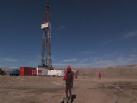

|
CAIYOU RIJI
CRUDE OIL
Wang Bing | China 2008 | 840 min.
Material: HDV
Format: HDcam
Original language: Mandarin
Camera: Wang Bing
Sound: Wang Bing
Editing: Guo Hengoi
Production: Kong Lihong
Print/Sales: Kong Lihong
NETPAC Award, IFF Rotterdam 2008, Special Mention
German Premiere
The film follows a group of oil field workers as they go about their daily routine during a complete and heavy working day.
It was conceived for an exhibition and lasts twice seven hours in order to fill two exhibition days completely with images that do not repeat. Originally it was planned to last 70 hours, but the production turned out to be more difficult than thought and Wang increasingly felt the need to intervene in the material.
It is said that Wang Bing was filming on a plateau in the Gobi desert, but in reality he had to move to a different mountainous region about 500 kilometres away, a journey on unmade snow-covered roads. The terrain that now plays the leading role in the film is in the province of Qing Hui. A high, empty, rough, windy and desolate landscape. Wang started to have altitude sickness at the high oil installation. It was so severe that the had to stop shooting prematurely while the crew continued to film the rest of the material. When he was a guest in Rotterdam, the committed film maker had still not entirely recovered, but he did not seem to regret his adventure.
– Gertjan Zuilhof, Rotterdam Filmfestival
Wang Bing, born in 1967 in Xi’an, China. He studied until 1996 at the Film Academy in Beijing, and then realized the 18-parts TV series "Campus Affairs". In 2003 he became internationally known with his three-parts long time documentary "Tie Xi Qu/Tiexi District: West of the Tracks". His first fictional film is currently at the post-production phase.
Films (selection): L'argent du charbon (Coal Money) 2008 (UNDERDOX 04) | Cai you ri ji (Crude Oil) 2008 | He Fengming (Fengming, a Chinese Memoir) 2007 (UNDERDOX 03) | Tie Xi Qu (Tiexi District: West of the Tracks) 2003
back
|